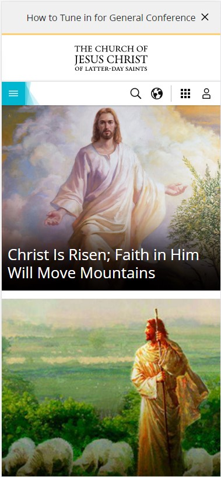
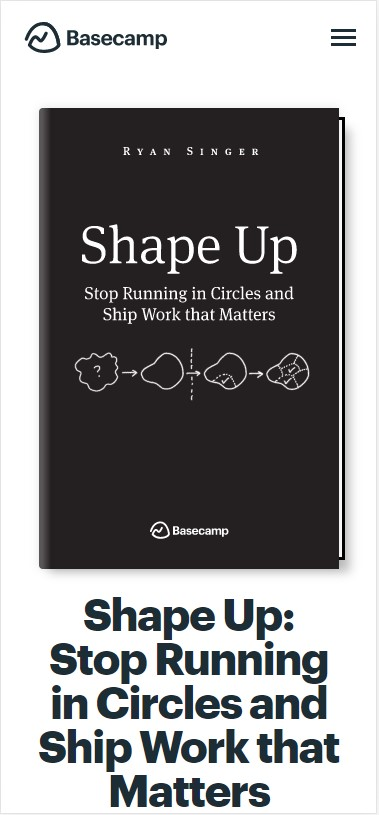
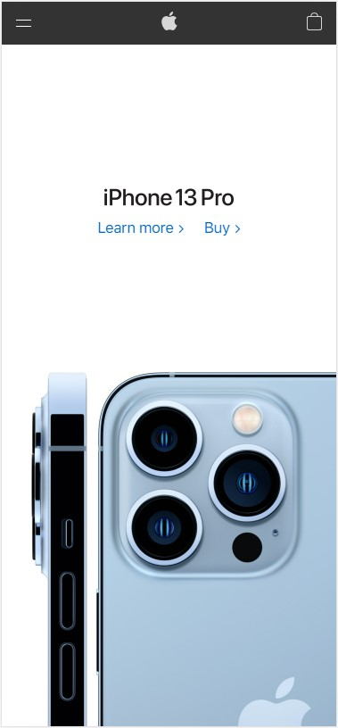

Hick's Law
The Church of Jesus Christ
churchofjesuschrist.com 
The mobile site is a really good example of hick's law. The page narrows down your choices for you; there's a drop down menu, a search bar, a language selector, a tools dropdown, a profile login button, and the huge General Conference option in the middle of the page. There are only six options on the page and they are formatted in such a way that makes decision making very easy when you arive on the site.
Rule of Thirds
Basecamp: Shape Up
basecamp.com/shapeup 
The desktop version of this site uses the rule of thirds. The title of the book shows up in one of the sweet spots on the page.
White Space and Clean Design
Apple
apple.com 
The apple website homepage is a clear example of white space and clean design. The site simply inclues a picture of the newest iPhone, the words "iPhone 13 Pro", and two buttons; "Learn more" and "Buy". The rest of the homepage is white space, it gives the page a very simplistic and clean feel.